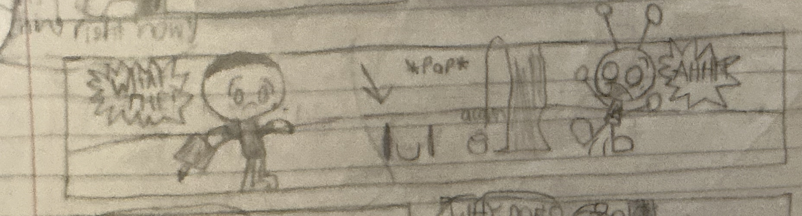

Grass


| Name | Grass |
|---|---|
| Pronouns | He/him |
| Appearance | The ground with a face drawn on it |
| Personality | Goofy, supportive, and random |
| First Appearance | The first comic |
| Family | Grassball (sibling) |
Overview
Grass is a character in the redJSR universe who first appeared in the very first comic. He is literally the ground with a face drawn on it.
Appearance
Grass is depicted as the ground itself, with a face drawn on the surface. His simple appearance is part of what makes him distinctive.
Personality
Grass is goofy, supportive, and random. He brings an unpredictable energy to the characters and can be counted on to offer support.
History
Grass made his debut in the first comic, making him part of the early history of the series.
Relationships
- Grassball: Grass's sibling. The two are sort of the same thing, which is why they are considered siblings. They also co-founded Grassball's donut stand in 1971.
Part of the redJSR Wiki.